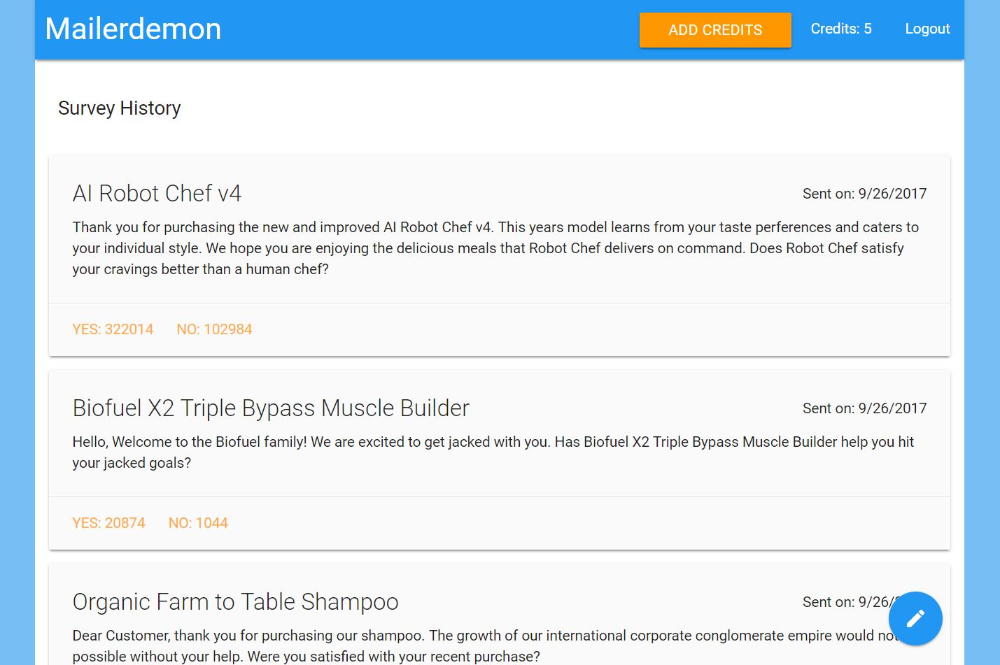

Kouros Codes

Projects
This site and the following projects are hosted on a virtual server configured using Amazon Web Services EC2 and Linux. All React apps were created with create-react-app npm module provided by Facebook and are in their production ready build states. The configurations (i.e. email authentication for sending messages, Express app/router handling) can be found here on Github. The dynamic Mailerdemon app runs on a different port with its own dedicated Node.js server instance.
Mailerdemon
An email survey/feedback full stack application built with Node.js/Express, React, and MongoDB. This project was built to demonstrate further back-end complexity by integrating multiple services/APIs.
-
Authentication
Passport.js authentication middleware used with Node.js.
Google strategy configured within Passport.js to handle token based authentication flow with Google O-Auth API.
Scope access limited to user's Google ID as a means of unique user identification throughout app.
The Cookie Session NPM module used to maintain user identification within the application. Passport.js passes user information through serialization / deserialization of cookies obtained from header.
-
Database
Used MongoDB database hosted on mlab.com.
Mongoose used to create user and survey collections with accompanying schema / models / and subdocument collection.
User credits and survey data validation database queries ensure application data integrity.
-
Server
Used Node.js and Express to create backend server.
Relative routing used to ensure fluid deployments to Heroku production environment without reconfiguration.
Custom middlewares created to validate user authentication and credit allocation.
API routes receive client-side data as well as interact with Sendgrid and Stripe API services.
-
Billing
NPM stripe and react-stripe-checkout modules used to process user payments.
Charge object created client-side and sent to server for further processing using Axios.
Stripe Node.js module used to submit charge and receive token for charge validation.
-
Mailing
Sendgrid used for survey mass-mailing and feedback gathering.
ngrok configured to create local tunnel for Sendgrid testing.
Webhook setup to receive incoming survey feedback data.
Server pre-processing / filtering logic used to verify and scrub incoming data.
Sendgrid mailer service created using numerous Sendgrid module helper functions.
-
Client
create-react-app used to create foundation of React application.
Redux used to manage survey and user states contained within the Redux store.
react-router-dom handles routing between landing page, survey dashboard, and survey creation.
redux-form ensures data validation and persisting values on survey form components.
Materalize CSS framework used to provide design consistency throughout app.

Weather Master Platinum Edition
A React application that displays the five day forecast of user selected locations.
-
Client
create-react-app used as foundation of project.
Redux used to manage data state. Data is retrieved and processed in the parent component and handed down to the map and chart containers to be displayed.
Action, action creator, and reducer tied to location entry submission event.
-
Chart
Victory Charts used to display temperature, humidity, and pressure data from user selected locations.
Data concatination and formatting required to display within charts.
Charts configured to display appropriate axis, scale, animation, and labeling.
-
Map
Gmaps npm module used to display Google Map image of user selected locations.
Longitude and latitude data derived from openweathermaps.org passed into Gmaps container to display appropriate location.
Snazzy Maps styling applied to map rendering.
-
API
openweathermap.org used as source of weather information.
Axios configured to retrieve payload data from openweathermap.org.

Reactube
A Youtube video viewer built with React.
-
Client
Unlike other projects, this application does not use Redux. As the application is flat, Redux's strengths cannot be fully applied.
All data is managed through React's native component props and state.
lodash debounce NPM module used to prevent React from re-rendering too frequently upon changing search query.
-
API
Youtube's API (activated through the Google Developer Console) used as data source for videos and descriptions.
youtube-api-search NPM module configured to retrieve data into React.
All data relevant to the application is retrieved in the parent component's state (index.js) and passed to children containers as props.

freecodecamp.com API Projects
My introduction to backend concepts and Node.js was facilitated through freecodecamp.com's exercises, projects, and community. Five API microservices were built according to user story specifications. The source code for these projects can be found here on Github.
Resume
Profile
Web developer looking to leverage previous IT career skills in solving complex technical challenges as a means to professional growth. Creative, strategic, and flexible working across large organizations or small teams. Strong presentation, relationship building and communication skills.
Experience
The ANA Project2017 - Present
- Provide non-profit tutoring and mentor services to underserved youths of Washington DC for SAT/ACT test preperation.
Tutor
Furition Partners - A DXC Company2014 - 2016
Technical Consultant2015 - 2016
- Created custom solutions to fulfill business requirements using Javascript and the ServiceNow library.
- Lead client engagements in implementing ITIL best practices to better manage and enhance ServiceNow instances.
- Maintained functional and technical documentation in regards to requirements, solutions, code changes, and client communications.
- Ran entire service desk, hardware, network, and cloud environments serving over 350 employees.
- Lead platform migration from Google to Microsoft involving SharePoint logical architecture design, communication planning, contractor management, go-live support planning, and employee training.
IT Engineer2014 - 2015
Alion Science and Technology2011 - 2014
Knowledge Management Analyst
- Implemented Microsoft SharePoint solutions across enterprise to provide consolidated data management, business process automation, site administration/customization, portal development, and dynamic dashboard integration.
- Served as lead developer throughout entire project life cycle, involving Finance SOX auditing, HR ethics compliance, and IT cyber-security training.
- Reduced enterprise telecommunications spend by $354k by consolidating mobile service providers, centralizing company accounts, and renegotiating service provider contracts.
Whitener and Jackson General Contractors2010 - 2011
Project Manager
Firstlight ERA2009
Associate Sales Manager
Adcision Luxury Media2007 - 2008
Business Analyst
Education
Virginia Polytechnic and State University2002 - 2007
B.S. Economics, B.S. Biology (Concentration: Biotechnology), Chemistry Minor
Skills and Interests
- JavaScript (ES7), Node.js / Express, React, Git, Amazon Web Services (AWS), Python, Linux
- SharePoint, ServiceNow, Salesforce
- Classical pianist and electronic music producer, won high awards
- Other interests include reading, biking, gadgets, football, concerts, philosophy, dogs, and podcasts
About
Two years ago I had a career "moment of clarity." A company acquisition and my subsequent shift in job responsibilities required me to pick up Javascript. One evening as I was debugging a script for a client, I set aside my work for the evening and thought to myself "I look forward to getting back to this tomorrow." It was a moment later that I realized this was the first time I had ever been genuinely looking forward to getting back to work.
As someone who previously made excuses out of fear for not pursue programming, I decided to silence future regret by finally immersing myself in coding. I enjoy the meditative nature of it, and my background in I.T. unexpectedly helped in the nitpicking, problem-solving behavior required in debugging and follow through.
I currently spend my time divided between tutoring for a nonprofit in downtown D.C. and coding. I am self-taught using resources available online. Codeschool.com and freecodecamp.com proved to be immensely useful in structuring material in a way that cemented the fundamentals of coding. Codewars.com and hackerrank.com were also great sources for exposing myself to algorithms and data structures. As I started building applications, Udemy, Youtube, and what seemed like one fifth of the content of stackoverflow.com supplied the supplemental knowledge needed to continue advancing my skills.
While at times frustrating and time consuming, I believe this approach to learning has ultimately strengthened my skills and understanding in a way a classroom environment couldn't have. The answers to my questions were never handed to me. Constant searching through videos, forums, and documentation opened up additional reinforcement and insight into the ways other developers solved the same problems. It was ultimately the iterative process of trial and error that has led me onto the path of becoming a better and more efficient developer.
Contact